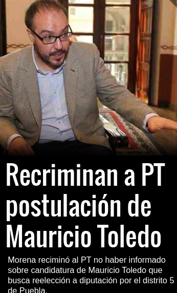

En nuestro entorno electoral sobrerregulado
Volver a permitir la reelección consecutiva en 2014
En 2014, cuando volvimos a permitir la reelección consecutiva, varias voces prominentes se alzaron para advertir que es poco el cupo para esperar que cambiará gran cosa. Los partidos mantuvieron el control de las nominaciones y las campañas, en demérito de la independencia que se asocia con la ambición reeleccionista. Por ejemplo, en lo que podríamos llamar la cláusula partidista, Merino Zarkin vieron [una cita de ellos]. Y es cierto que habría sido muy preferible una reelección sin restricciones de este tipo. Sin embargo, habrá que ver sistemáticamente las renominaciones y las elecciones municipales y legislativas venideras para detrminar si no hay fuerzas contrarias que dificultarán el control de la jerarquía partidista.
Argumento: quitas al campeón bajo tu propio riesgo.

Figura 1: Del sitio web de reforma.com, 2-abr-2021
Foto del reforma con PT-Toledo.